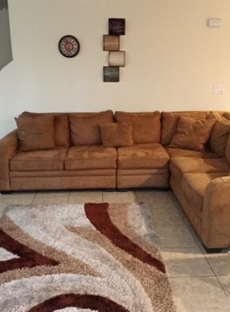

Ruby's House
Ruby House 1, 2 , 3 and 4
Our facilities provide a safe place for women and children with multiple vulnerabilities we promote community, our comprehensive service rich transitional living environments. We implement individual and family case management, setting realistic short term and long-term goals with our clients, tracking progress, 12- step recovery meetings, and relapse prevention groups.
We design our program structure to assist with independent living and household establishment life skills, conflict resolution and effective communication skills building practices.
We provide client advocacy, job preparation, volunteer training, tutoring for our children, and service linkages.
Our services further respond to the academic needs of the children through school registration assistance and the provision of school supplies, backpacks and uniforms
